Profit Maximization
EC 311 - Intermediate Microeconomics
2024
Outline
Chapter 08
Topics
- Market Structures and Perfect Competition (8.1)
- Profit Maximization in Perfect Competition (8.2)
Market Structures and Perfect Competition
Market Structures
We will deal with 4 different types of markets
- Perfect Competition
- Monopoly
- Oligopoly
- Monopolistic Competition

Market Structures - Differences

Perfect Competition Assumptions
We will begin with Perfectly Competitive Markets
And we will set some key assumptions
- Number of Firms: There are a large number of firms in the market
- Any single firm’s decisions has no impact on the market equilibrium.
- Products Sold: All firms make identical products
- This means that consumers will treat all goods produced as perfect substitutes.
- This means that consumers will treat all goods produced as perfect substitutes.
- Barriers to Entry: There are no barriers to entry/exit
- This means that any new firm is free to enter the market and start producing/selling without any obstacles. Similarly, any firm that wants to exit the market can do so freely.
- This means that any new firm is free to enter the market and start producing/selling without any obstacles. Similarly, any firm that wants to exit the market can do so freely.
The key implication from these assumptions is that firms do not have a choice on what price to charge
Profit Maximization
What We Have Done So Far
We learned where the Cost Function \(C(Q)\) comes from
We also learned about properties of the Cost Function:
- Total Costs
- Variable Costs
- Fixed Costs
- Marginal Costs
- Average Total Costs
- Average Fixed Costs
- Average Variable Costs
Now we will put the Cost Function to work in order to find a firm’s Supply Function
Let’s First Ask: What Are Profits?
In Economics, we use the Greek letter \(\pi\) (pi) to represent profits
And they follow an intuitive formula:
\[ \pi = \text{Revenue} - \text{Costs} \]
We will also make an important distinction between Accounting Profits and Economic Profits where the difference comes in the costs
Accounting Profits
Accounting Costs are the direct costs of operatin a business
These are what we think about when we talk about profits in accounting, finance, etc.
Economic Profits
Economic Costs will include Accounting Costs and Opportunity Costs
- Opportunity Costs are all foregone benefits from other possible choices once we do make a choice. We don’t necessarily observe this in the data
This is important concept once we consider the firm’s optimal profits
Profits
In simpler words, if I sell Revenue (R) worth of goods and I had Costs (C), the profits are:
\[ \pi = R - C \]
Continuing our trend of putting things in terms of \(Q\), we get:
\[ \pi(Q) = R(Q) - C(Q) \]
We have already dealt with Costs as a function of \(Q\), that was our Cost Function \(C(Q)\)
Now we will figure out what Revenue as a function of \(Q\) is
Revenue
We define Revenue as:
\[ \text{Revenue} = P \cdot Q \]
Plugging this into our Profit function gives us:
\[\begin{align*} \pi &= \color{red}{\text{Revenue}} - \text{Cost} \\ \pi &= \color{red}{P \cdot Q} - \text{Cost} \end{align*}\]
This is where Production is simpler:
- Profits are a single-variable function
- This means that the math to maximize profits is straightforward
- We will just take the derivative and set it equal to zero
Maximizing Profit
Let’s solve this profit maximizing problem in the most general form:
\[ \pi = R(Q) - C(Q) \]
We take the derivative w.r.t. Q and set it equal to zero
\[ \frac{\partial \pi}{\partial Q} = \frac{\partial R(Q)}{\partial Q} - \frac{\partial C(Q)}{\partial Q} = 0 \]
These derivatives have their own name
\[ \text{Marginal Revenue} - \text{Marginal Cost} = 0 \]
\[ \text{Marginal Revenue} = \text{Marginal Cost} \]
Maximizing Profits
A firm maximizes its profits by finding the Quantity that makes Marginal Revenue equal to Marginal Cost
\[ MR(Q) = MC(Q) \]
We can push this a bit further. We had just found the formula for Revenue: \[ R(Q) = P \cdot Q \]
So if we take the derivative of this w.r.t. \(Q\) we will find the Marginal Revenue
\[ \frac{\partial R(Q)}{\partial Q} = MR(Q) = P \]
Putting it all together gives us the key to finding maximum profits for a perfectly competitive firm:
\[ P = MC(Q) \]
Profit Maximizing Condition
The firm will be at its maximum profit when they meet the condition \[ P = MC(Q) \]
From the firm’s perspective, this means they sould produce exactly the level of \(Q\) at which the Marginal Cost of producing another unit is equal to the price it is sold at
Here’s an intuitive example. Let’s say you earn $5 per unit you produce:
- The first unit costs $1 to make
- You would make it!
- The second unit costs $2 to make
- You make it!
- The third unit costs $4 to make
- You make it!
- The fourth one costs $5.01 to make
- You don’t make it!
Producing to Maximize Profits
So the production decision follows the rules:
- When \(P > MC\), the firm Produces More!
- When \(P < MC\), the firm Does Not Produce
- When \(P = MC\), the firm is Maximizing Profit
Quick Math Note
When the Cost Function is Cubic, the MC Function is Quadratic
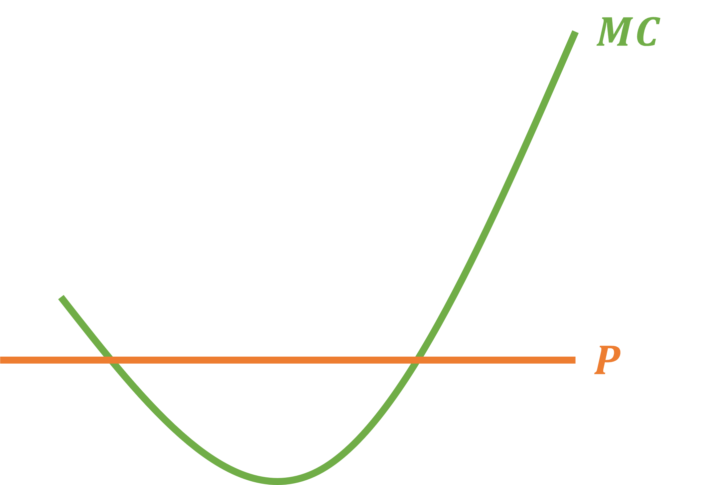This means that Marginal Revenue will equal Price at 2 pionts
The firm will always choose the point of intersection when the Marginal Curve slopes upwards!
Profit Maximization Problem
Let the Cost Function be
\[ C(Q) = Q^{2} + 4Q + 20 \;\;\;\;\; \& \;\;\;\;\; P = 8 \]
1 - Find the Profit Function: \(\;\; \pi(Q) = R(Q) - C(Q)\)
\[\begin{align*} \pi(Q) &= R(Q) - C(Q) \\ \pi(Q) &= P \cdot Q - C(Q) \\ \pi(Q) &= 8 \cdot Q - (Q^{2} + 4Q + 20) \\ \pi(Q) &= 8Q - Q^{2} - 4Q - 20 \end{align*}\]
Profit Maximization Problem
\[ \pi(Q) = 8Q - Q^{2} - 4Q - 20 \]
\[\begin{align*} \frac{\partial \pi(Q)}{\partial Q} &= 0 \\ 8 - 2Q - 4 &= 0 \\ 2Q &= 4 \\ Q^{*} &= 2 \end{align*}\]
Another Way to Maximize Profits
Use the fact that Marginal Cost must equal Price
\[ C(Q) = Q^{2} + 4Q + 20 \;\;\;\;\; \& \;\;\;\;\; P = 8 \]
\[\begin{align*} MC(Q) = \frac{\partial C(Q)}{\partial Q} = 2Q + 4 \end{align*}\]
\[\begin{align*} MC(Q) &= P \\ 2Q + 4 &= 8 \\ 2Q &= 4 \\ Q^{*} &= 2 \end{align*}\]
Maximizing Profit
The firm can then use the found optimal quantity, \(Q^{*} = 2\), to figure out how much is their maximum profit given their costs and market price
\[ \pi(Q) = P \cdot Q - C(Q) \;\;\;\;\; ; \;\;\;\;\; C(Q) = Q^{2} + 4Q + 20 \;\; ; \;\; P = 8 \]
Profits
\[\begin{align*} \pi &= P \cdot Q - C(Q) \\ \pi &= P \cdot Q - Q^{2} + 4Q + 20 \\ \pi &= 8 \cdot 2 - \left( (2)^{2} + 4(2) + 20 \right) \\ \pi &= 16 - \left( 4 + 8 + 20 \right) \\ \pi &= 16 - 4 - 8 - 20 \\ \pi &= -16 \end{align*}\]
Profits can be Negative and the optimal choice!
Note the profits that producing 0 goods yields:
\[\begin{align*} \pi(0) &= 8(0) - (0)^{2} - 4(0) - 20 \\ \pi(0) &= -20 \end{align*}\]
Negative Profits
The previous firm’s maximum profit is a loss of $16
Negative Profits can sometimes be the optimal choice
- The firm would have lost more if they had produced zero \((\pi(0) = 20)\)
So even though they lost money, producing something was still better than not producing at all!
Now that we know how profits work, we can begin to find the supply curve
Finding Supply
Finding the Firm’s Supply Function
Recall that we have assumed that a Perfectly Competitive firm cannot set its price
It does not have the power to do so in the market
- To be more exact, any changes it makes does not affect the market equilibrium
So because the firm just looks at the market price \((P)\) and chooses how much to produce, we will model supply as a function of price
Let’s continue to use our previous firm as an example, but we will leave Price as a variable:
\[ \pi(Q) = P \cdot Q - C(Q) = P \cdot Q - Q^{2} - 4Q - 20 \]
Find MC and set equal to Price
\[\begin{align*} MC &= 2Q + 4 \\ \\ MC &= P \\ 2Q + 4 &= P \end{align*}\]
Solve for \(\; Q^{*}\)
\[\begin{align*} 2Q + 4 &= P \\ 2Q &= P - 4 \\ Q^{*} &= \frac{P - 4}{2} \end{align*}\]
Finding Supply
So our Supply Function will look like
\[ Q^{*} = f(P) \]
This tells us how much a firm will produce as a function of the price
We can also find the Supply Curve
This will be what we are able to graph, where \(P\) will be on the y-axis
\[ P = f(Q^{*}) \]
We have now created a Supply Curve that is in the same format as our Demand Curve
Let’s See It Graphically
For the Cost Function
\[ C(Q) = \frac{1}{2}Q^{2} + 10Q + 10 \]
Find and Draw the MC, AVC, AFC, and ATC
Marginal Cost
\[ MC = Q + 10 \] 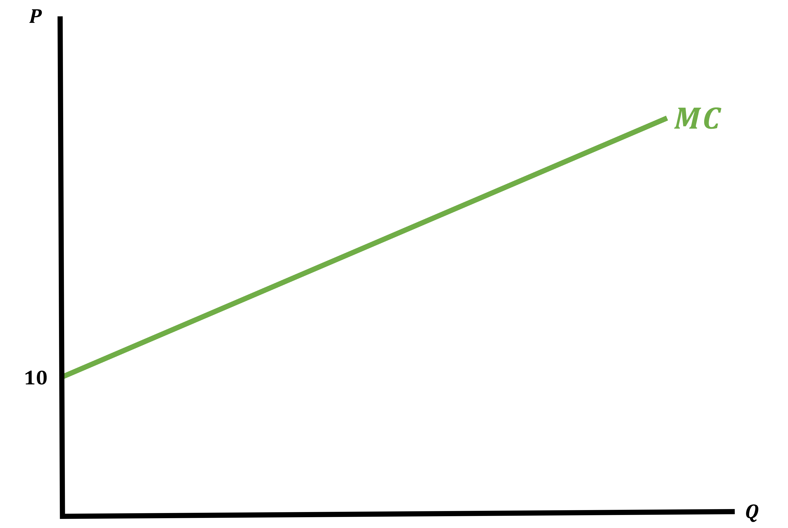
Average Fixed Cost
\[ AFC = \frac{10}{Q} \] 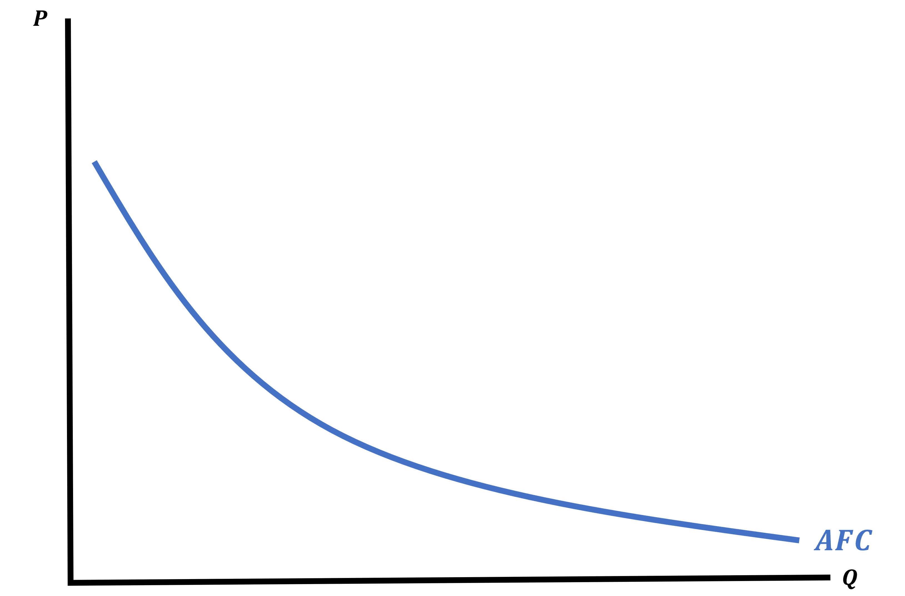
Average Variable Cost
\[ AVC = \frac{1}{2}Q + 10 \] 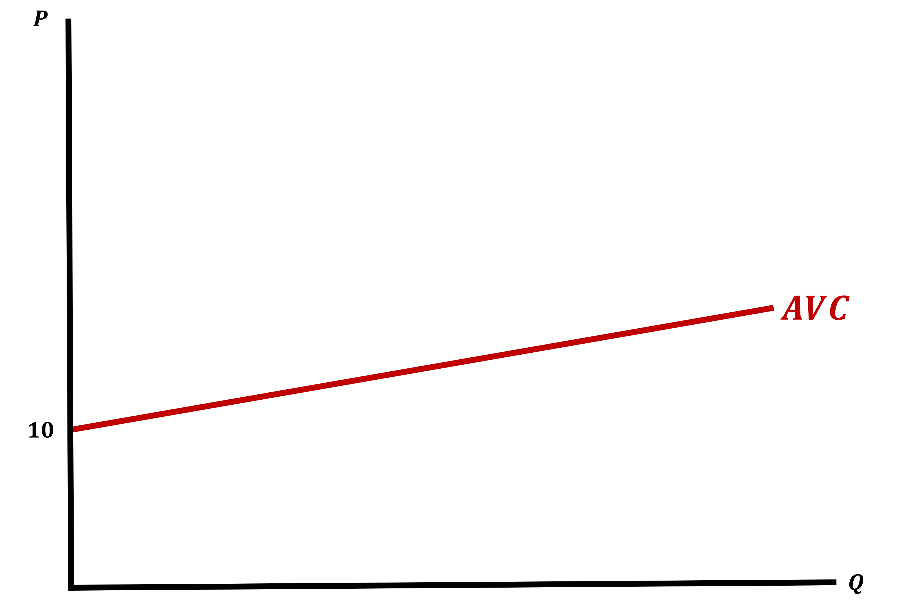
Average Total Cost
\[ ATC = \frac{1}{2}Q + 10Q + \frac{10}{Q} \] 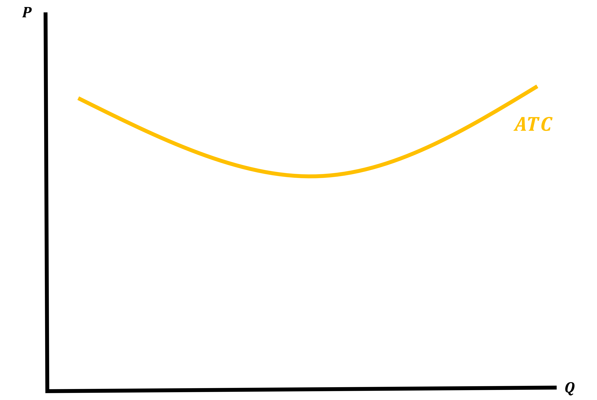
Where is Supply?
Let’s put it all together
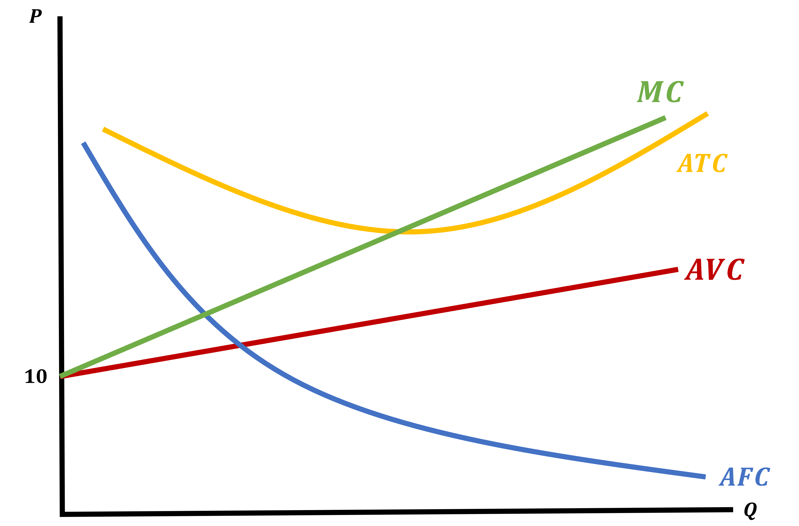Where is Supply?
Okay, so there wasn’t an explicit Supply Curve
But it is there, we just have to polish it up a bit
Lets add some prices and map out the corresponding optimal quantities
Using \(P = MC\) where \(MC = Q + 10\) and \(P = 20 , 25 , 30\) the optimal quantities are: \[ P = MC \]
\[\begin{align*} 20 &= Q + 10 \rightarrow Q = 10 \\ 25 &= Q + 10 \rightarrow Q = 15 \\ 30 &= Q + 10 \rightarrow Q = 20 \end{align*}\]
Where is Supply?
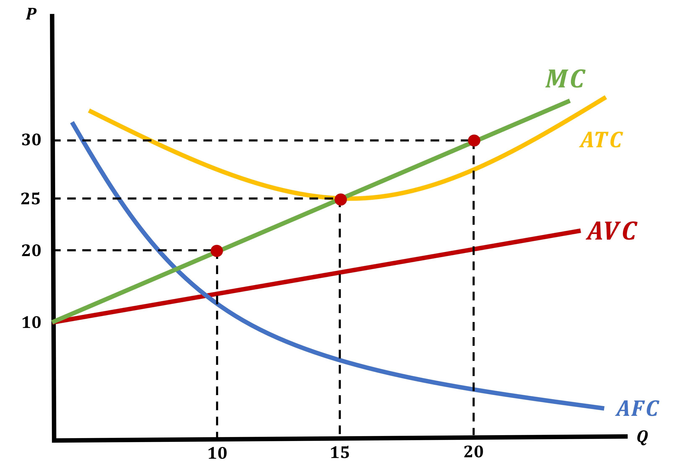
The Marginal Cost Curve maps the market price to the profit maximizing \(Q^{*}\)
- The MC Curve IS the Supply Curve for a perfectly competitive firm \[ P = MC = Q + 10 \]
Finding Profit from a Graph
We can also use this graph to find a firm’s profits
We will do this in steps:
- Find revenue (Recall \(\text{Revenue} = P \cdot Q\))
- Find the firm’s total cost using Average Total Costs
- Use the fact that profit is just the difference between Revenue and Cost
1- Finding Revenue
Assume that \(\; P = 30 \;\) in this market
We know that at \(\; P = 30 \;\) we have \(\; Q = 20\;\)
\[\begin{align*}
\text{Revenue} &= P \cdot Q \\
\text{Revenue} &= 30 \cdot 20 \\
\text{Revenue} &= 600
\end{align*}\]
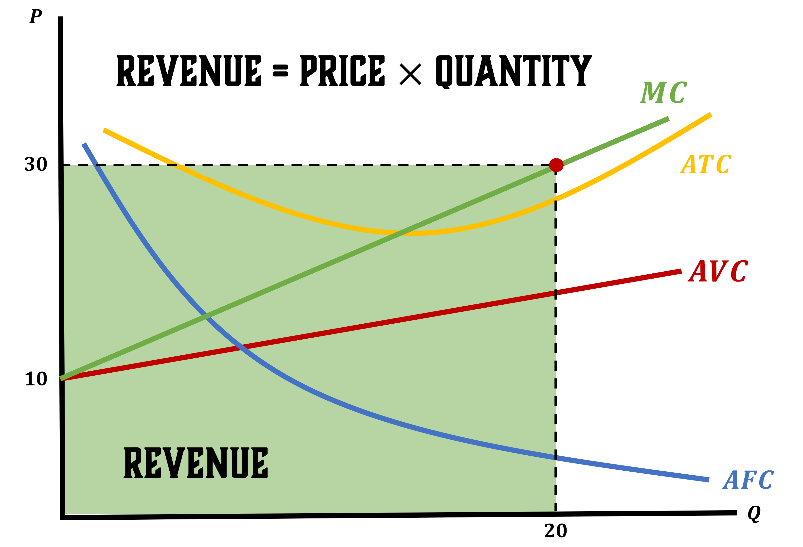
2 - Finding Costs (Using ATC from Graph)
Because we do not graph Costs we will use the ATC to find total costs To find Total Costs, first recall how we found ATC \[\begin{align*} ATC = \frac{C(Q)}{Q} \;\; \Rightarrow \;\; C(Q) = ATC \cdot Q \end{align*}\]
Our Average Total Costs are \(\; ATC = \frac{1}{2}Q + 10Q + \frac{10}{Q}\)
\[\begin{align*} C(Q) &= ATC \cdot Q \\ C(Q) &= Q \cdot \left(\frac{1}{2}Q + 10 + \frac{10}{Q}\right) \\ C(Q) &= \frac{1}{2}Q^{2} + 10Q + 10 \\ C(20) &= \frac{1}{2}(20)^{2} + 10(20) + 10 \end{align*}\]
\[ \text{Costs} = 410 \]
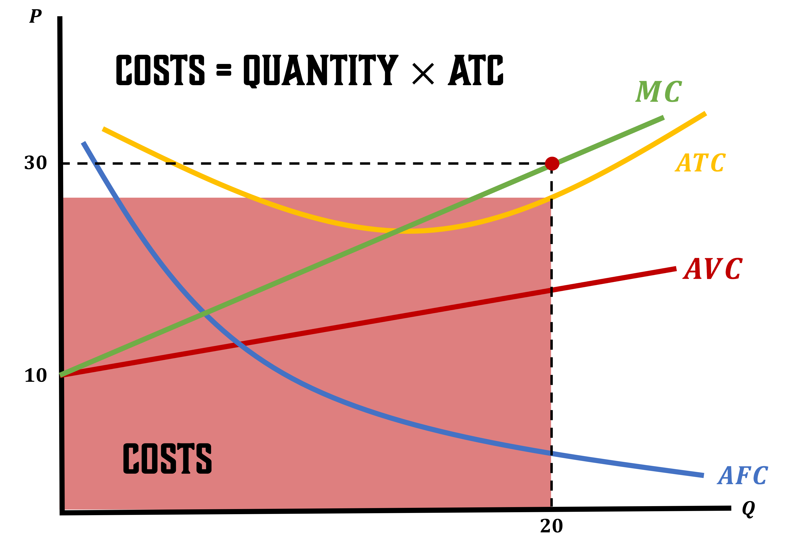
Finding Profit
Profit will simply be the difference between these two boxes
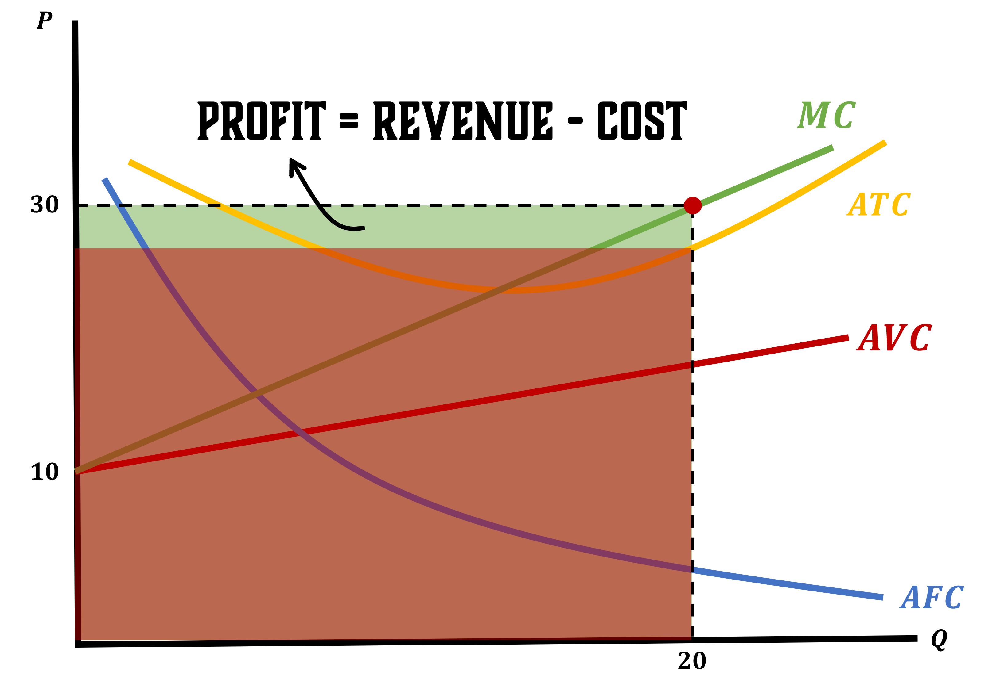Finding Profit
Something imoprtant that we have already mentioned is tha profits can be Positive, Negative, or Zero
In math terms, this is determined if:
- When \(P > ATC\), the firm has Positive Profits
- When \(P < ATC\), the firm has Negative Profits
- When \(P = ATC\), the firm has Zero Profits
Why Would a Firm Ever Want Zero Profits?
We are thinking about Economic Profits
Remember this means that we care about Opportunity Costs
What this implies is that firms will squeeze their productivity as much as possible
This is a concept that trips up many non-economist minded folk so its worth expanding on:
\[\begin{align*} \text{Accounting Profits} = \text{Revenue} - \text{Accounting Costs} \end{align*}\]
Firms want their Accounting Profits to be positive, its how firms stay in business
Pushing Economic Profits Down to Zero
\[\begin{align*} \text{Accounting Profits} = \text{Revenue} - \text{Accounting Costs} > 0 \rightarrow \; :) \end{align*}\]
Now let’s compare this to Economic Profits
\[\begin{align*} \text{Economic Profits} = \text{Revenue} - \left(\text{Accounting Costs} + \text{Opportunity Costs}\right) \end{align*}\]
- Opportunity Costs will push Economic Profits down as much as possible
- This means that the firm will be making their best possible choice
Because firms do not want to be in the negative, their maximum Economic Profits will be equal to zero
Zero-Profit Condition
When Do Firm’s Make Zero Profit?
The Perfectly Competitively firm will make Zero Profit when \[ P = ATC(Q^{*}) \]
How does this work, let’s multiply both sides by \(Q\)
\[\begin{align*} P \cdot Q &= ATC(Q^{*}) \cdot Q \\ \text{Revenue} &= \text{Cost} \end{align*}\]
We call this the
Zero-Profit Condition
Zero-Profit Condition Equalities
From all the work we’ve done so far, we know that this point is the intersection of many different things
- We begin with \(P = ATC(Q^{*})\)
- Recall we found that \(P = MC(Q^{*})\) at that intersection \[ P = ATC(Q^{*}) = MC(Q^{*}) \]
- Lastly, remember that the Marginal Cost Curve and the Average Cost Curve cross at the minimum of the ATC Curve \[ P = ATC(Q^{*}) = MC(Q^{*}) = \min\{ATC(Q^{*})\} \]
Zero-Profit Condition
\[ P = ATC(Q^{*}) = MC(Q^{*}) = \min\{ATC(Q^{*})\} \]
This is our Zero-Profit Condition
If Price is equal to the Marginal Cost at the point where Marginal Cost is equal to Average Total Cost, then it must also be the point where the Average Total Cost is at its minimum
Zero-Profit Condition Example
From just the Cost Function we can find the Supply Curve for the firm, and the Price at which it achieves zero profits
We will do this by:
- Finding the Supply Curve
- Finding the Optimal Quantity \((Q^{*})\) to produce
- Finding the \(\pi = 0\) price
1 - Find Supply Curve
\[ C(Q) = Q^{2} + Q + 81 \]
We can find this two ways: 1. Take the Derivative of profits wrt Quantity or 2. Set Margial Curve equal to Price and solve for \(P\)
Find \(\; \frac{\partial \pi}{\partial Q} = 0\)
\[\begin{align*} \pi &= \text{Revenue} - \text{Cost} \\ \pi &= P \cdot Q - (Q^{2} + Q + 81) \\ \frac{\partial \pi}{\partial Q} &= P - 2Q - 1 = 0 \\ P &= 2Q + 1 \end{align*}\]
Find MC = P and solve for P
\[\begin{align*} P &= MC \\ P &= 2Q + 1 \end{align*}\]
2 - Find Optimal Quantity
\[ P = 2Q + 1 \]
\[ \text{Zero-}\pi \text{ Condition}: P = MC = ATC(Q) = \min\{ATC \} \]
Using the Zero-Profit Condition find the optimal Quantity
Set MC = ATC
\[\begin{align*} MC &= ATC \\ 2Q + 1 &= Q + 1 + \frac{81}{Q} \\ \color{red}{Q \cdot} (2Q + 1) &= \color{red}{Q \cdot} \left(Q + 1 + \frac{81}{\color{red}{Q}}\right) \\ 2Q^{2} + Q &= Q^{2} + Q + 81 \\ Q^{2} &= 81 \\ Q^{*} &= 9 \end{align*}\]
3 - Find the \(\pi = 0\) Price
\[ Q^{*} = 9 \]
\[ \text{Zero-}\pi \text{ Condition}: P = MC = ATC(Q) = \min\{ATC \} \]
Using the Zero-Profit Condition find the Zero-Profit Price
\[\begin{align*} P &= MC(Q^{*}) \\ P &= 2Q + 1 \\ P &= 2(9) + 1 \\ P &= 19 \end{align*}\]
We say that at P = 19 we have \(\pi = 0\)
3 - Alternate Solution
Find \(\min \{ATC(Q) \}\)
\[ ATC(Q) = Q + 1 + \frac{81}{Q} \]
Find \(\; \frac{\partial ATC}{\partial Q} = 0\)
\[\begin{align*} \frac{\partial ATC}{\partial Q} &= 0 \\ 1 - \frac{81}{Q^{2}} &= 0 \\ \frac{81}{Q^{2}} &= 1 \\ Q^{*} &= 9 \end{align*}\]
Plug-in \(\; Q^{*} \;\) into ATC to find Price
\[\begin{align*} P &= ATC(Q^{*}) \\ P &= \color{red}{Q^{*}} + 1 + \frac{81}{\color{red}{Q^{*}}} \\ P &= \color{red}{9} + 1 + \frac{81}{\color{red}{9}} \\ P &= 10 + 9 \\ P &= 19 \end{align*}\]
That Negative Profit Thing is Still Odd
Earlier we saw that sometimes it makes sense for firms to continue to operate even when they’re making a loss
This is because the loss is still smaller than the loss from not operating at all
Then how bad do things have to get for them to Shut Down?
Shutting Down
Negative Profits
How can we tell whether a firm should produce or shut down?
- The Average Total Cost tells us whether a firm makes profits or losses
- \(P = ATC\) means that \(P \cdot Q = ATC(Q^{*}) = C(Q^{*})\)
- The Average Variable Cost tells us whether a firm makes profits or losses, ignoring fixed costs
- \(P = AVC\) means that \(P \cdot Q = AVC(Q^{*}) \cdot Q = VC(Q^{*})\)
If \(P = AVC(Q^{*}) \rightarrow\) The firm makes no gains from producing!
When Do Firms Shut Down?
If \(\text{Revenue} < VC(Q^{*})\), then profits will be less than \(-FC\)
Let’s look at the intuition behind this:
- The firm is making so little revenue, that it is making negative profits
- If this is true, then the firm is not making enough to even cover their Fixed Costs.
- The firm cannot even afford to pay their monthly warehouse costs
- Then it can’t pay their labor, can’t afford their storefront
- Why keep going?
It doesn’t. This is when the firm shuts down, takes their ball and goes home
\[ \text{Shutdown Condition: } P < AVC(Q^{*}) \]
Perfectly Competitive Firm Shutdown Condition
We have the following conditions:
- If \(P = AVC(Q^{*})\), the firm is indifferent between producing and shutting down
- If \(P < AVC(Q^{*})\), the firm shuts down
- If \(P > AVC(Q^{*})\), the firm will produce
Recall that MC = AVC at min{AVC} so it is equivalent to say:
- \(P = \min\{AVC\} \rightarrow\) firm is indifferent
- \(P < \min\{AVC\} \rightarrow\) firm shuts down
- \(P > \min\{AVC\} \rightarrow\) firm produces
Two Important Conditions
So we have two important conditions that determine things about firms:
Zero-Profit Condition
\[ P = ATC(Q^{*}) \;\;\; \text{or} \;\;\; P = \min\{ATC(Q^{*}) \} \]
Shut-Down Condition
\[ P < AVC(Q^{*}) \;\;\; \text{or} \;\;\; P < \min\{AVC(Q^{*}) \} \]
Two Important Conditions
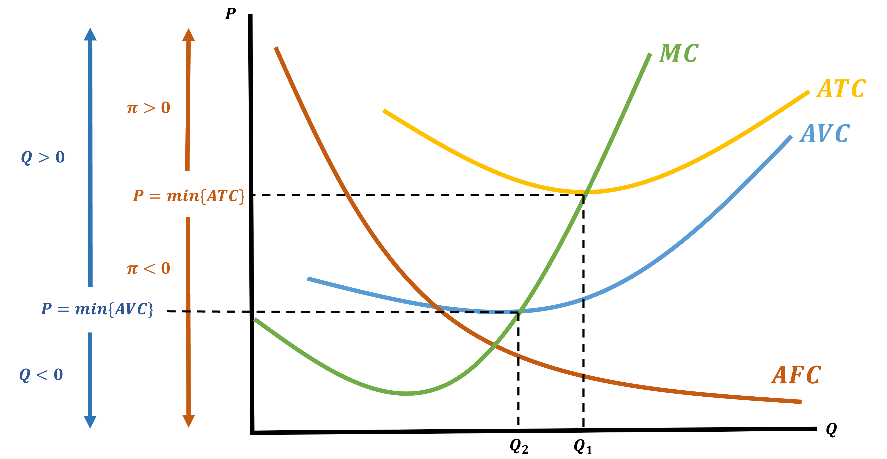Effects on the Supply Curve
The Shut-Down Condition will impact what the Supply Curve looks like
- Because the firm will shut down if \(P < \min\{AVC\}\), we need to adjust our Supply Curve
- Remember we found that the Supply Curve was the Marginal Cost Curve
- This is still true, but we are adding our Shut-Down Condition
Supply Curve With Shut-Down Condition
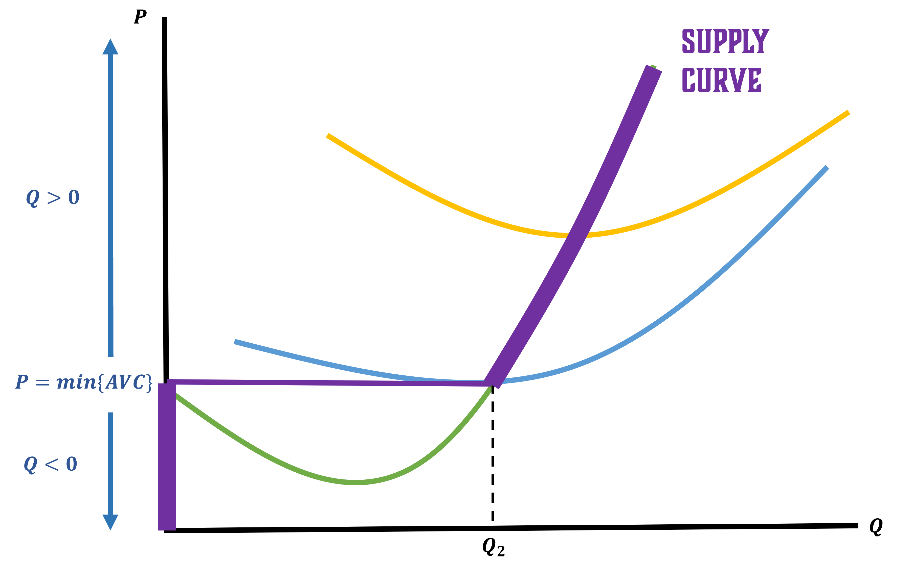“New” Supply Curve
The Supply Curve will follow:
\[\begin{equation*} \text{Supply Curve} = \begin{cases} P = MC(Q^{*}) &\text{if} \;\;\; P \geq \min\{AVC(Q^{*})\} \\ \\ Q = 0 &\text{if} \;\;\; P < \min\{AVC(Q^{*})\} \end{cases} \end{equation*}\]
Supply curve
We call this the Short-Run Supply Curve and we will deal with this in the next lecture
For now, let’s think of how profit may look if we think of it in terms of inputs
Profit as a Function of Factors
Rewriting Profit Using Inputs
If things are simplified when only thinking about quantity, why do this at all?
Remember our jersey example, by doing this we can put both the factory’s and Nike’s decision together in one step
- Our factors of production are Labor and Capital
- Costs look like: \(wL + rK\)
- Revenue is: \(P \cdot Q\)
- Quantity is determined by: \(Q = F(L,K)\)
All put together we get:
\[\begin{align*} \pi &= \text{Revenue} - \text{Cost} \\ \pi &= P \cdot \color{red}{Q} - \left( wL + rK \right) \\ \pi &= P \cdot \color{red}{F(L,K)} - \left( wL + rK \right) \end{align*}\]
Profit as a Function of Factors
\[ \pi(L,K) = P \cdot F(L,K) - \left( wL + rK \right) \]
Now we can maximize profits by choosing Labor and Capital
But notice we do not have a constraint anymore. We put it inside our profits!
So how do we maximize a function of 2 variables (with no constraint)?
- We take both partial derivatives and set them both equal to zero
Maximizing Profits as a Function of Factors
\[ \pi(L,K) = P \cdot F(L,K) - \left( wL + rK \right) \]
We will take the derivative of profit wrt labor and capital
Partial wrt Labor
\[\begin{align*} &\frac{\partial \pi}{\partial L} = 0 \\ \\ P \cdot &\color{red}{F_{L}(L,K)} - w = 0 \\ \\ P \cdot &\color{red}{MP_{L}} = w \end{align*}\]
Partial wrt Capital
\[\begin{align*} &\frac{\partial \pi}{\partial K} = 0 \\ \\ P \cdot &\color{red}{F_{K}(L,K)} - r = 0 \\ \\ P \cdot &\color{red}{MP_{K}} = r \end{align*}\]
Important First Order Conditions
We got two important conditions from having maximized our profits:
\[ P \cdot MP_{L} = w \]
The wage must be equal to the value of the marginal product of labor
\[ P \cdot MP_{K} = r \]
The rental rate must be equal to the value of the marginal product of capital
In simpler words: The firm find where the value of an additional unit of labor/capital is equal to their cost
Using Factors of Production
In future Economics courses, you will likely focus on labor markets and capital markets
When thinking of markets, profit maximization tells us the demand for labor and capital
- We get functions \(L^{*}(w,r,P)\) and \(K^{*}(w,r,P)\)
These equations linking wages and rental rates to how Labor and Capital are used under profit maximizing decisions are important
We will not be doing much with this alternative method of viewing profits but these conditions are extremely important
The intuition and logic is crucial. Firms pay what factors are worth and that will be determined by market parameters
Function of Factors Example
Let the market wage be 10 \((w = 10)\) and the price the firm receives for the product is 5 \((P = 5)\)
If your marginal product of labor is \(MP_{L} = 8 \cdot L^{-1/2}\)
How much labor should the firm use if it is profit maximizing?
Recall: \(\; w = P \cdot MP_{L}\)
\[\begin{align*} w &= P \cdot MP_{L} \\ 10 &= 5 \cdot 8 \cdot L^{-1/2} \\ 10 &= 40 \cdot L^{-1/2} \\ \frac{1}{4} &= L^{-1/2} \\ 4 &= L^{1/2} \\ 16 &= L^{*} \end{align*}\]
Function of Factors Example
What if instead we leave wages as an uknown?
\[ w = 5 \cdot 8 \cdot L^{-1/2} \]
\[\begin{align*} w &= 40 L^{-1/2} \\ \\ \frac{w}{40} &= L^{-1/2} \\ \\ \frac{40}{w} &= L^{1/2} \end{align*}\]
\[\begin{align*} \left( \frac{40}{w} \right)^{2} &= \left( L^{1/2} \right)^{2} \\ \\ L^{*} &= \frac{1600}{w^{2}} \end{align*}\]
Function of Factors Example
If we leave \(w\) unspecified, these results can have some useful interpretations:
\[ w = 5 \cdot 8L^{-1/2} \;\;\; \Rightarrow \;\;\; \text{Labor Demand Curve} \]
\[ L^{*} = \frac{1600}{w^{2}} \;\;\; \Rightarrow \;\;\; \text{Labor Demand Function} \]
EC311 - Lecture 06 | Profit Maximization